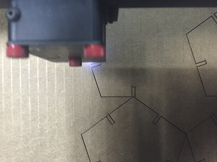

Week 1
To-do:
Cut something on a vinyl cutter
Design, make, and document a parametric press-fit construction kit
Create a website
Claude Shannon: "the father of information theory"
Theory of Self-Reproducing Automata: book by John von Neumann demonstrating the logical requierement for machine self-replication. His machine, the Universal Constructor, was designed in the 1940's without the use of a computer
circumbendibus: a roundabout way
Ohm's Law: I = V/R current through a conductor between two points is directly proportional to the voltage across the two points
Murray's principle: formula of relating the daughter branches to the radii of the parent branch of a lumen-based system – radius of the parent branch cubed equals to the sum of all of the daughter radii cubed. The same principle has been applied to engineering in the design of minimum mass vascular networks carrying liquid healing agent to areas of skin damage
Fick's laws of diffusion: describes diffusion, the first law was based on the assumption of a steady state in which particles move from areas of high concentrations to low concentration areas thereby establishing an equilibrium
Fourier's law: the law of heat conduction which states heat flows spontaneously from the hotter body to a cooler body converging toward a thermal equilibrium
chirality: property of asymmetry that, unlike, a mirror image cannot be superpose one object onto another
vector: displacement of a starting point, has both magnitude and direction
tensor: analogous but more general than a vector, represents a distortion in the form of a linear relation - e.g. dot product, cross product, linear maps
voxel: unit of value in three-dimensional space
halftone: technique that simulates imagery through the use of dots varying either in size or in spacing
interpolation: method of construction new data points within the range of a known set of data points
WHY? WHY NOT?
black vinyl on wall

Dodecahedron
With the help of Nathan's awesome tutorial, I made a parametric press-fit dodecahedron. At the base of the structure is a regular pentagon (Dih5symmetry, order 10), held together with circular parts. The shape is bound by a rectangular joints that can be resized dynamically. This was my first time using Rhino's Grasshopper plug-in. Albeit successful, the experience was largely frustrating – my efforts culminated in a Rhino and Grasshopper files. Finally, the piece was laser cut of our cardboard – it's aesthetic was designed to stimulate geometry I am considering for the light portion of my final project.


- 
Website
Using templated websites in the past has been frustrating – they never look right and editing the beehive of code these come with is never fun. For the sake of my sanity, I decided to flex my front-end prowess and create a minimal page from scratch – built easy to edit.
Inspired by the class website I worked under the premise of less is more – no fancy effects or Javascript to start. The challenge was to make the page with an idiosyncratic “notebook” feel. One of the things I hoped to convey is how I take notes - whenever I come across an unfamiliar term, name, or principle I record it to look up at a later point. Thus, the first section of each week is devoted to this initiative – most of the highlighted terms are related to the course and some are an indication of other interests.
The other important feature of the website it it’s aesthetic – a clean look with a touch of uniqueness. As an individual sensitive to typography, font selection is not a trivial matter. After going through a couple of permutations, I settled on a paring of Arvo and Cutive Mono (both are available for free on Google Fonts). While a fan of all things white, I thought to add a gradient in the background inspired by color palette of a sunset. Eventually, I hope to use this page as a sandbox for remodeling, geletina.com - my current website.